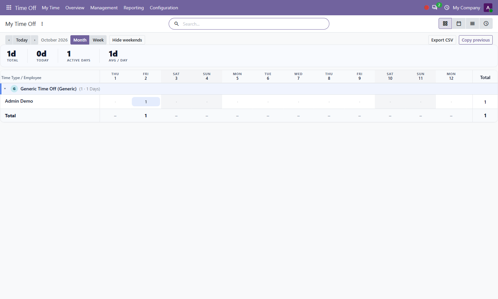
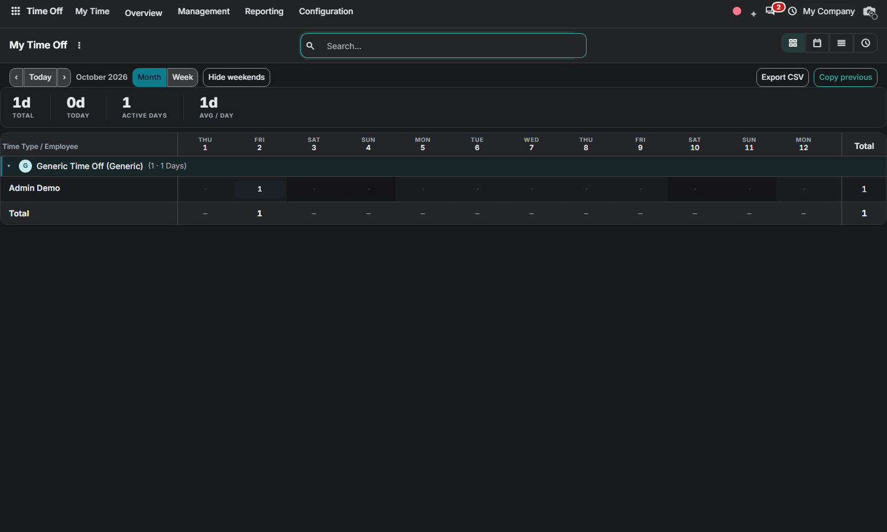

Free Odoo 20.0 Community • By Zeetavix
Nova Leave Grid brings the Enterprise-style grid experience to Community time off — rebuilt from scratch: who is out, on what leave type, and for how long, in one consumption matrix with heatmap intensity, sticky headers, month/week ranges and a hero-number dashboard.
Sections are leave types, rows are employees, columns are days. Read-only by design: time off always flows through the approval workflow, so the grid is the consumption overview — requests stay where they belong.

The grid follows your backend theme: elevated header/footer bands, dimmed weekends, damped heat pills and a theme-aware accent.

Nova Grid (bundled engine, auto-installed dependency) • hr_holidays
By Zeetavix — https://zeetavix.com
Version: 20.0.1.0.0
License: LGPL-3 (free and open source)
Price: Free
Dependencies: nova_grid, hr_holidays
Built for: Odoo 20 Community — no
Enterprise code used or required.
Install: drop the nova_leave_grid
folder in your addons path, update the apps list,
install. Installing this module pulls in the nova_grid engine automatically.
Support: support@zeetavix.com — found a bug? open a GitHub issue